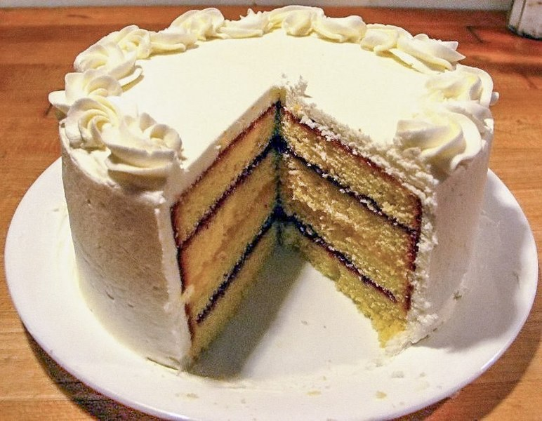

Cake recipe

Description
Choose your favourite filling for this easy, perfectly fluffy sponge cake – we've opted for lemon curd and whipped cream, but you could have jam. Perfect for afternoon tea.
Ingredients
- 225g softened butter
- 225g golden caster sugar
- 4 large eggs
- ½ lemon, zested
- 1 tsp vanilla extract
- 225g self-raising flour
- 225g self-raising flour
- Optional fillings of lemon curd, jam, lightly whipped cream
- icing sugar for dusting
Steps
- Heat oven to 180C/160C fan/gas 4, butter and line the base of two 20cm spring-form cake tins with baking parchment.
- Using an electric whisk beat the butter and sugar together until pale and fluffy. Crack the eggs in one at a time and whisk well, scraping down the sides of the bowl after each addition. Add the lemon zest, vanilla, flour, milk and a pinch of salt. Whisk until just combined then divide the mixture between the two tins.
- Bake in the centre of the oven for 25-30 mins until a skewer inserted into the middle of each cake comes out clean. After 10 mins remove the cakes from their tins and leave to cool completely on a wire rack. Fill how you like. My personal favourite is a good dollop of lemon curd and some fresh cream, then dust the top with icing sugar. Will keep for 3 days.